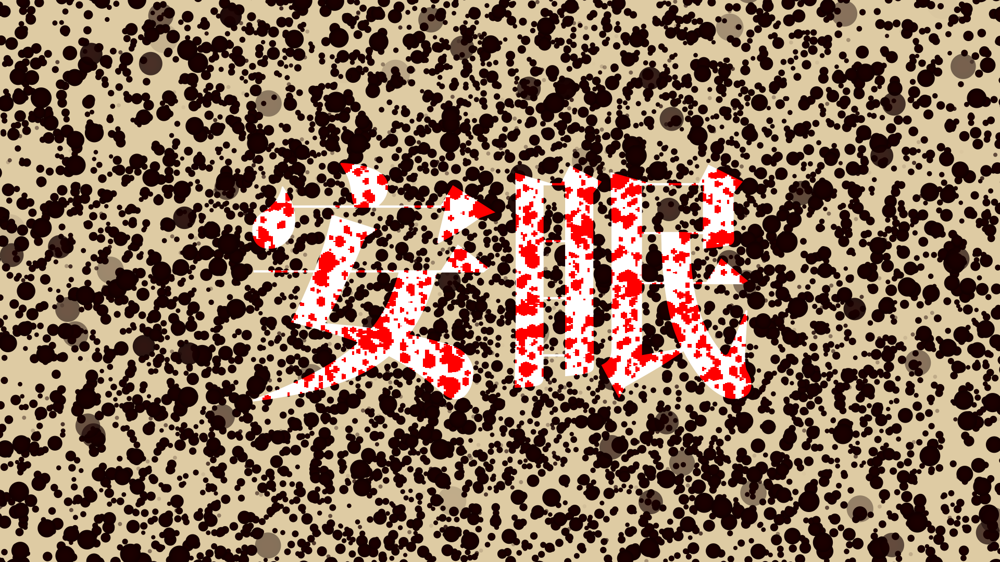

Settings | 设定集
The following settings are listed by time.
All The Time
私(わたし) | 我
The ME.
The ME is actually a symbol of the spiritual carrier of mine.Also,it carries all the feelings and thoughts of mine,as is mentioned in the poem.
What she had experienced just see The Origin.
The Seventh | 七分刻

It's strange.The clock was divided into seven parts....So do our lives?
Part 1
The Eye of Abyss | 深渊之眼

〃Wer mit Ungeheuern kämpft, mag zusehn, dass er nicht dabei zum Ungeheuer wird. Und wenn du lange in einen Abgrund blickst, blickt der Abgrund auch in dich hinein.〃——Friedrich Wilhelm Nietzsche
Part 2
Diode | 二极管
The first thing I came up with "Check Valve".
It is well known that through a Diode electron flow can only pass in one direction,that is a symbol of a Check.
Expected Valve | 期望值
E(X)=0 stands for Having no expectation of Life,which is the usual symptom of the Depression(a kind of mental illness).
They just wait to die.
Derivative Function | 导数
f'(X)=0 stands for A Great Peace towards life,being cold-blooded towards everything.
They only care about themselves,or Not.
The Cross | 叉

〃You shall not pass.〃
Everything they do are just simply regarded wrong,or in their minds they themselves are doing everything wrong.
The symptom of 「Delusion of Sin」.
Part 3
Zolpidem | 唑吡坦
Sleep ｜ 安眠
HAVE A NICE SLEEP.
FOREVER.
Part 4
Station ｜ 月台
〃Here is the end.〃
Sliently,waiting for the 〃TRAIN OF THE FUTURE〃
Roof ｜ 屋顶
〃In or Out,two different world.〃
Will you enjoy the view here,or enjoy the sky
Part 5
WORD LIST ｜ 词汇列表
Group A Representational ｜ 具象组
轨迹/Track:The track of ■■■■.
淡雪/TinySnow:Winter.
流星/Meteor:Make a wish,then it will never realize.
联接/Connection:Talk or not.
洋流/OceanCurrent:Let the flow take away your sorrow.
青霉/Penicillium:Kill all the cells.
齿车/Gears:The gears of the world run nowhere.
日耀/RadiativeDisaster:Bathe in the sun,then the skin cancer.
血液/Blood:The red cells are moving now.
稻田/RiceField:Nobody.
市井/City:Buildings,men,mess.
宇宙/nothingness: .
月华/Moonlight:You can only see the moonlight when it's night,sunny and also bright.
秋雨/AutumnRain:
After rain the empty mountain(空山新雨后)
Stands autumnal in the evening(天气晚来秋)
暮色/Dusk:The dusk of ■■■■.
黯夜/Darkness:The sky turns dark.The fear falls.
Group B Abstract ｜ 抽象组
休眠/Sleep:Never wake up.
分裂/Separate:Strong conflict.
恐慌/Terror:Being terrified of ■■■■■■.
喧嚣/Chaos:[Beeping Noise]
心驰/HeartDashing:[Slient]
渴慕/Desire:[Barking]
健忘/Forgettable:What?
未知/L'inconnu:Tout semble si étrange.
闲适/Relaxed:Enjoy your remaining time.
苦守/Waiting:[Patiently]
深杳/ : .
孤身/Loneliness:[Whimpering]
疾跑/Running:[Heavy Footsteps]
逐风/WindChaser:Hope.
返乡/HomeBacking:Welcome back.
长梦/Dream:Where am I?
Meteor ｜ 流星

Part 6
Four words | 四个词
Limitation | 桎梏
Honestly speaking,to be limited is really awful,but it also acts as a shelter,to protect you from danger.
Appreciation | 品味
It's to taste,to enjoy,then put yourself to a higher level after appreciating a large quantity of excellent works.
Imagination | 發想
No,that's not something enjoyable,instead Nightmare.
Just imagine something terrible and imagine every morning when you are woken up by those.Incredibly disgusting !
Determination | 決意
That's what I am doing,now.